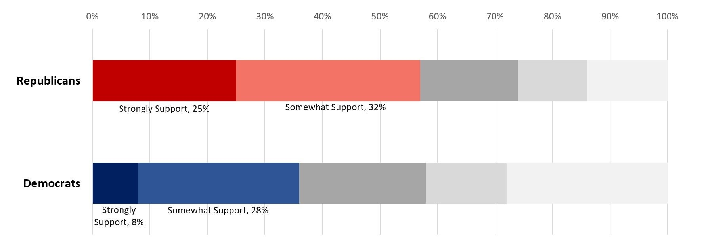
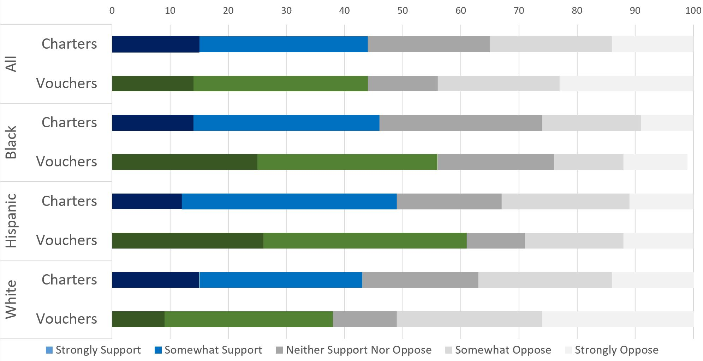

School Choice
School choice is the principle that families should be able to have agency in deciding where their children will attend school. The two most widely discussed types of school choice in the United States are vouchers and charter schools.
The Buzz around Charters and Vouchers
Charter schools are public schools with independent management. They are accountable for pursuing the goals established in the schools' charter. The majority (68%) of charter schools are operated independently (i.e. as a single school rather than a member of a network), with the remaining schools operating in various networks including "Charter Management Organizations" like the Knowledge is Power Program (KIPP) and Uncommon Schools. Sources of contention include whether charter schools fail to address issues of school segregation, inflate their scores by "skimming" the best students or teaching to the standardized tests, if (and where) they outperform traditional public schools, and what explains the differences in states' charter laws.
Vouchers are government funds that families can use toward the cost of private schools. Whereas advocates of vouchers approve of the increased choice afforded to families, criticism centers on the use of vouchers at religious schools and the effectiveness of voucher programs.
Charters and Vouchers, Increasingly, Are a Political Reality.
The nation's first charter school was founded in 1992. By the 2015-2016 academic year, charter schools constituted a full 7% of the nation's public schools. The distribution of these schools is highly uneven. For example, 49.1% of the D.C. public schools and 24.2% of Arizona schools were charter schools. At the other end of the distribution are Alabama, Montana, Nebraska, South Dakota, Vermont, West Virginia, none of which had charter schools in the year under consideration.
Vouchers have a smaller market share. EdChoice, an organization that promotes school choice, reported in June of 2018 that there were just over 190,000 students receiving vouchers nationwide.
Democratic Party Largely Supportive of Charters; Republican Leaders Champion Multiple Forms of School Choice
President Obama's "Race to the Top" program, which launched in 2009 and ultimately awarded more than $4 billion of federal education funding to states, listed among the scoring and selection criteria that states should not have laws against charter schools. President Trump's Secretary of Education, Betsy DeVos, has made school choice a central focus of her tenure.
During the 2016 election, the Democratic Party maintained a generally supportive stance toward non-profit charter schools, provided that they not undermine traditional public schools or underserve students of any particular demographic:
Democrats are committed to providing parents with high-quality public school options and expanding these options for low-income youth. We support democratically governed, great neighborhood public schools and high-quality public charter schools, and we will help them disseminate best practices to other school leaders and educators. Democrats oppose for-profit charter schools focused on making a profit off of public resources. We believe that high-quality public charter schools should provide options for parents, but should not replace or destabilize traditional public schools. Charter schools must reflect their communities, and thus must accept and retain proportionate numbers of students of color, students with disabilities and English Language Learners in relation to their neighborhood public schools. We support increased transparency and accountability for all charter schools.Source: DNC Platform, 2016.
The Republican Party, in contrast, has thrown its weight behind school vouchers under Secretary of Education Betsy DeVos, an appointee of President Trump.
Political Parties Out of Step with Voter Base?
A 2018 poll from Education Next asked respondents whether they "support or oppose the formation of charter schools" and if they would support a proposal "that would give low-income families with children in public schools a voucher" that could be used toward private schools. The results were surprising.
Opinions on school choice, it would seem, do not cleave fully to party lines. 44% of self-reported Republicans and Democrats alike expressed favorable opinions about the voucher programs for low-income families. A slightly different wording of the question found Republican support for low-income vouchers to be at 39% in 2018 and Democratic support at 47%. (Notably, a full 64% of Republicans said they would support universal--as opposed to targeted--vouchers, as compared with 47% support of Democrats; this suggestions that considerations of who would receive the vouchers are a major determinant of support).
The trend was clearer with regard to charter schools. Republican respondents are more supportive of charter schools:
Implications for the 2020 Election
Democratic hopefuls in 2020 would do well to consider two other aspects of the Education Next results.
First, the majority of Hispanics and African Americans support vouchers and have higher levels of support for vouchers than for charter schools. Candidates hoping to attract minority support should bear these preferences in mind.:
Source: Education Next, Program on Education Policy and Governance -- Survey 2018
Second, the already tepid support among Democratic voters seems to be trending downward slightly. (Data collected since 2015 shows that vouchers, in contrast, experienced a slight dip in popularity among Democrats before rebounding to 47% approval):
Source: Education Next, Program on Education Policy and Governance: Trends in the EdNext Survey: Question Wording and Data Over Time Graphic adapted from: bl.ocks.org
Although recent opinion among surveyed democrats has been relatively stable since 2013, public opinion may shift. The unexpectedly heated debate in Massachusetts over a 2016 proposal to increase the charter cap, and the nationwide attention to Betsy DeVos' appointment to be Secretary of Education both show how quickly school choice can flare up as a headline-grabbing issue. The current administration's promotion of school vouchers and charter schools may also spark a realignment of the political landscape, according to somepundits who anticipate diminishing liberal support.
What do the 2020 hopefuls have to say about charters and vouchers?
School choice is not exactly trending on the Twitter pages of high-profile Democrats, complicating the task of analysis. To see candidates' statements on school choice, click the links below.
Biden | Bloomberg | Booker | Brown | Bullock | Buttigieg | Castro | Clinton | Cuomo | Delaney | Gabbard | Gillibrand | Harris | Hickenlooper | Inslee | Klobuchar | Landrieu | Merkley | Ojeda | O'Rourke | Sanders | Steyer | Swalwell | Warren | Yang
Senator Warren opposed a proposed charter cap increase in Massachusetts. She explained her position by saying:
“I am very concerned about what this specific proposal means for hundreds of thousands of children across our Commonwealth, especially those living in districts with tight budgets where every dime matters. Education is about creating opportunity for all our children, not about leaving many behind.”